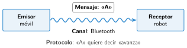

Cómo se comunican las máquinas
🤔 Pienso5 min
Qué hago aquí: Piensa un momento y contesta con lo que ya sabes. No pasa nada si no lo sabes: es para empezar.
En el teléfono escacharrado, una frase pasa de oreja en oreja y llega cambiada. ¿Por qué se estropea el mensaje?
✏️ Puedes responder escribiendo, con un dibujo o un esquema, o contándolo en voz alta.
📖 Leo y aprendo15 min
Qué hago aquí: Lee despacio, mira los dibujos y los ejemplos, y quédate con la idea clave del final.
Las máquinas se comunican como las personas. Una envía un mensaje y otra lo recibe.

Si el emisor y el receptor no usan el mismo protocolo, no se entienden. Es como hablar en dos idiomas distintos.
Con cable o sin cable
| Con cable | Sin cable | |
|---|---|---|
| Ejemplos | USB, puerto serie | Infrarrojos, radio, Bluetooth, wifi |
| Bueno | Rápido y sin fallos | El robot se mueve libre |
| Malo | El cable no deja moverse | Llega a poca distancia |
✏️ Hago25 min
Qué hago aquí: Haz las actividades en orden. Empieza siempre por las básicas.
Completa con el mando de la tele.
| Emisor | |
| Receptor | |
| Mensaje | |
| Canal |
Une cada palabra con su ejemplo.
| Canal • | • El robot |
| Receptor • | • La letra «A» |
| Mensaje • | • El Bluetooth |
¿Con cable o sin cable? Marca.
| Con cable | Sin cable | |
|---|---|---|
| Cargar el programa en la placa | ||
| Manejar un robot en una carrera |
Inventa un protocolo para tu robot. ¿Qué letra quiere decir cada movimiento?
¿Por qué el mando de una tele no sirve para otra tele de otra marca?
✏️ Puedes responder escribiendo, con un dibujo o un esquema, o contándolo en voz alta.
🚀 Amplío (si quieres saber más)
Qué hago aquí: ¿Has terminado? Lee la curiosidad o elige el reto. Es voluntario.
Vuelve al robot de Marte. ¿Por qué tiene que esquivar las rocas él solo, aunque reciba órdenes desde la Tierra?
✅ Compruebo5 min
Qué hago aquí: Contesta sin mirar la ficha y marca cómo lo llevas.